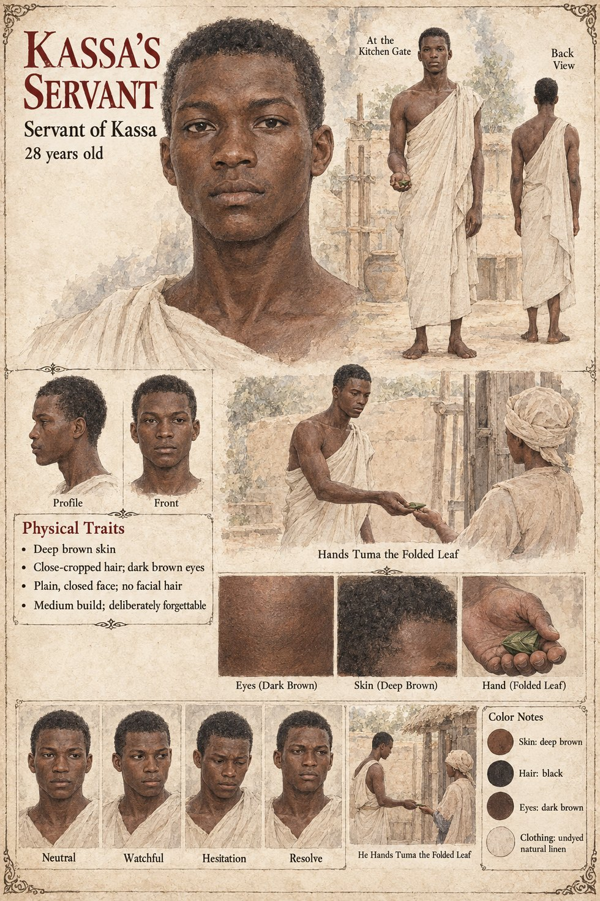

Kassa's Servant
Hands Tuma the folded leaf at the kitchen gate · unnamed · 28 years old on his sheet
One clause in Chapter Eleven. On the evening the leaf is handed over, Observer 1,451 is standing at the kitchen gate, and sees Kassa's servant handed the boy Tuma a twist of folded leaf. She has an instrument behind her eyes that can read the residue of a plant alkaloid on a human hand at eleven paces, and she reads it. The servant is the third link in a short chain: Awa tells Kassa, Kassa pays the woman who sells sleep by the pinch and puts the coin in the hand of Tuma, and the leaf itself passes through the servant's.
The manuscript gives no name, age, words or later appearance, and does not say whether he knows what the leaf is. It is the same evening on which the Observer, going home, buys a small leather sandal from a boy at the market gate. The manuscript gives the gate, the leaf and the handing; the rest is invented. The sheet's age of 28, deep brown skin, close-cropped hair, dark brown eyes, plain closed face with no facial hair, medium build and undyed linen are its own, as is its remark that he is deliberately forgettable. Its panels are Neutral, Watchful, Hesitation and Resolve, and its scenes At the Kitchen Gate and He Hands Tuma the Folded Leaf.
“Kassa's servant handed the boy Tuma a twist of folded leaf”